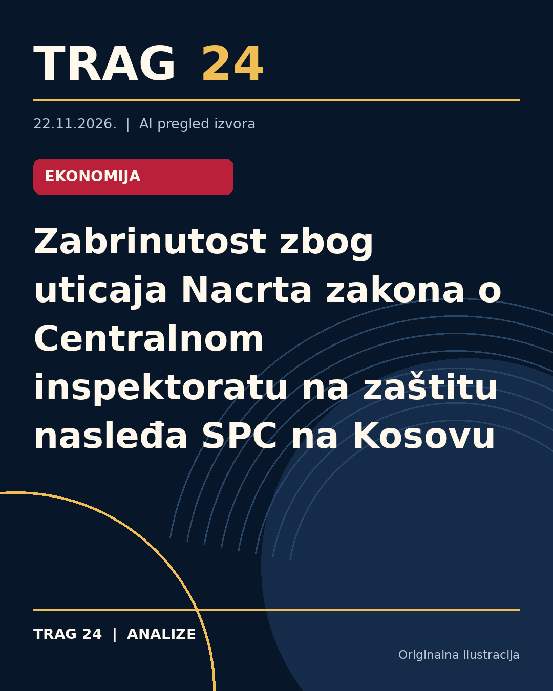

Zabrinutost zbog uticaja Nacrta zakona o Centralnom inspektoratu na zaštitu nasleđa SPC na Kosovu

ŠTA SE DOGODILO
Skupština Kosova usvojila je 20. novembra 2026. godine Nacrt zakona o Centralnom inspektoratu za kulturno nasleđe u prvom čitanju. Novi zakon predviđa reorganizaciju i proširenje inspekcijskih nadležnosti unutar Ministarstva kulture, uključujući samostalnu inspekciju kulturnih dobara, hitno obustavljanje neovlašćenih radova i zabranu konzervatorsko-restauratorskih zahvata pod propisanim uslovima.
HRONOLOGIJA
Nakon usvajanja nacrta zakona u prvom čitanju, Studentski pokret i neke druge srpske zajednice izrazili su zabrinutost zbog potencijalnog uticaja novih inspekcijskih ovlašćenja na zaštitu srpskog kulturnog i verskog nasleđa na Kosovu. Eparhija raško-prizrenska je navela da nije konsultovana prilikom izrade nacrta. Studentski pokret je objavio saopštenja koje ukazuju na mogućnost negativnog uticaja predloženog zakona na postojeće pravne garancije i zaštitu SPC imovine.
ŠTA NAVODE IZVORI
Iz svih izvora ističe se zabrinutost zbog usvajanja zakona bez konsultacija sa Srpskom pravoslavnom crkvom, čiji su verski objekti direktno pogođeni predloženim zakonskim rešenjima. Takođe, navodi se da zaštita kulturnog nasleđa treba da se zasniva na stručnosti, vladavini prava i poštovanju postojećih pravnih garancija. Studentski pokret poziva međunarodnu zajednicu da prati dalju proceduru i poziva kosovske institucije da usklade zakon sa postojećim zaštitnim mehanizmima i pravnim obavezama.
ŠTA JE POTVRĐENO
Potvrđeno je da je Nacrt zakona o Centralnom inspektoratu usvojen u prvom čitanju u Skupštini Kosova dana 20. novembra 2026. godine. Tekst predviđa proširenje inspekcijskih ovlašćenja u oblasti kulturnog nasleđa. Takođe je izvesno da su predstavnici srpske zajednice, uključujući Studentski pokret i Eparhiju raško-prizrensku, izrazili zabrinutost zbog odsustva konsultacija sa Srpskom pravoslavnom crkvom i mogućeg ugrožavanja postojeće zaštite kulturnog i verskog nasleđa.
ŠTA NIJE POTVRĐENO
Nije potvrđeno da li će predložene inspekcijske mere zaista ograničiti pravo SPC da održava i koristi verske objekte. Takođe, nema zvaničnih informacija o tome da li će zakon biti izmenjen ili dopunjen u daljoj zakonodavnoj proceduri kako bi se obezbedila usklađenost sa pravnim garancijama.
ŠTA OSTАJE OTVORENO: Ostaje nejasno kako će se predloženi zakon primenjivati u praksi i da li će doći do usklađivanja sa postojećim zakonima i međunarodnim obavezama koje se odnose na zaštitu srpskog kulturnog i verskog nasleđa na Kosovu. Takođe nije poznato kako će kosovske institucije odgovoriti na zahteve predstavnika srpske zajednice i međunarodne zajednice u vezi sa ovim zakonom.
Izvori
- https://n1info.rs/vesti/studentski-pokret-zakon-inspekcija-kosovo-nasledje/
- https://www.danas.rs/vesti/drustvo/studentski-pokret-nacrt-zakona-o-centralnom-inspektoratu-kosovo-spc/
- https://insajder.net/prenosimo/studentski-pokret-zabrinut-zbog-zakona-o-inspektoratu-za-kulturno-naslede-u-pristini-poziva-medunarodnu-zajednicu-da-prati-proces
Ova analiza je pripremljena uz pomoć veštačke inteligencije na osnovu javno dostupnih izvora. Navodi izvora nisu nužno nezavisno potvrđeni.